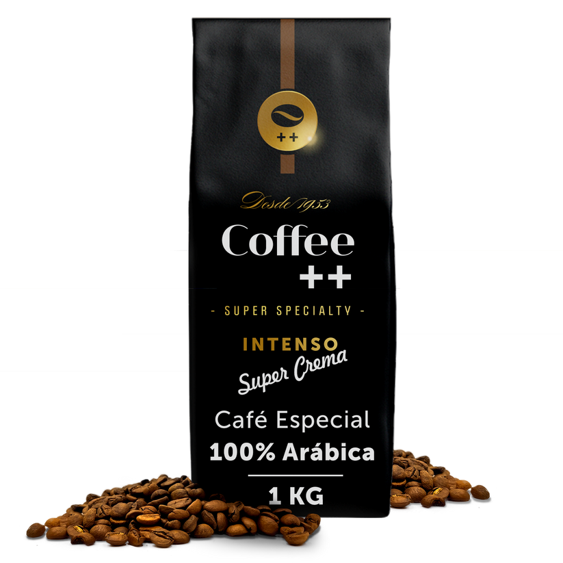

CAFÉ CAPARAÓ
Direto da região do Caparaó, este café especial Catuaí Amarelo foi cultivado a mais de 1.300 metros de altitude. O terroir que fica nos pés do Pico da Bandeira (3º ponto mais alto do Brasil) entrega maturação lenta, com doçura intensificada e notas sensoriais frutadas.
CAFÉ SUPER CREMA ESPRESSO
A Coffee ++ ouviu os pedidos dos clientes e agora oferece a opção de café em grãos 100% arábica na versão de embalagem de 1kg. Este é o lançamento Super Crema em um blend especial que oferece a bebida com alta intensidade e notas sensoriais de chocolate.